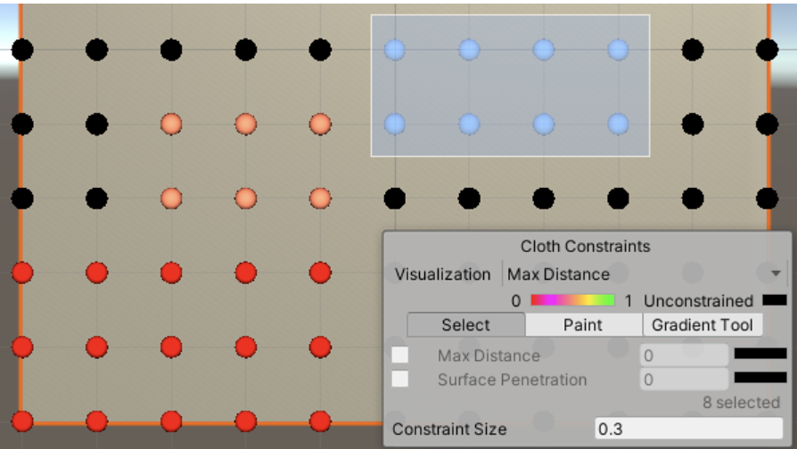
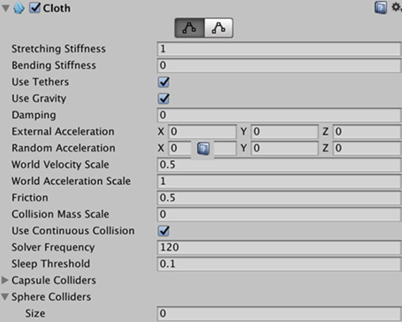

Cloth Demo : Unity
프로젝트 설명
:
Unity의 Cloth 기능을 활용한 Cloth 데모 프로그램
Cloth 기능을 사용하여 Unity 3D를 활용해서 간단한 데모를 만들었습니다.
Particle들을 고정 시키거나 collision constraints(정밀한 반응)값들을 조절하면서 변화를 관찰했습니다.
Cloth의 stretching stiffness나 Bending Stiffness,damping 같은 값들을 조절 하면서 이 수치가 cloth에 어떤 영향을 주는지 관찰했습니다.
(얼마나 늘어나는지,얼마나 휘는지, 얼마나 잘 변화하는지 등)

